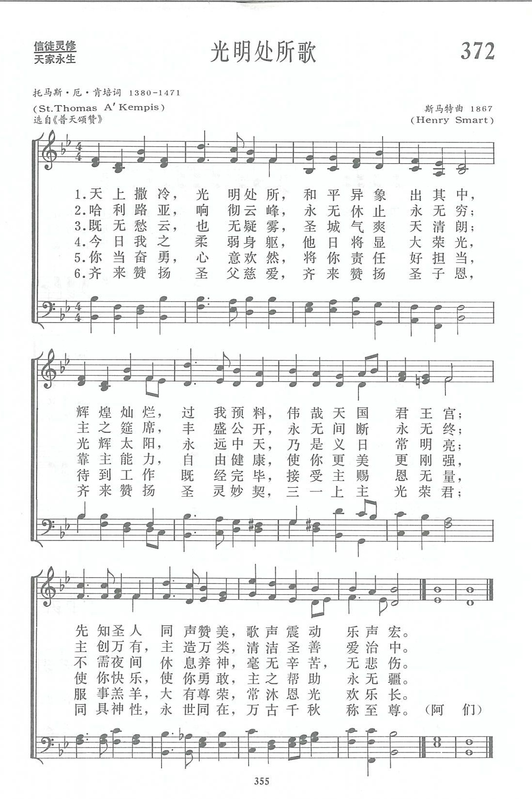
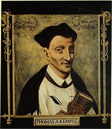
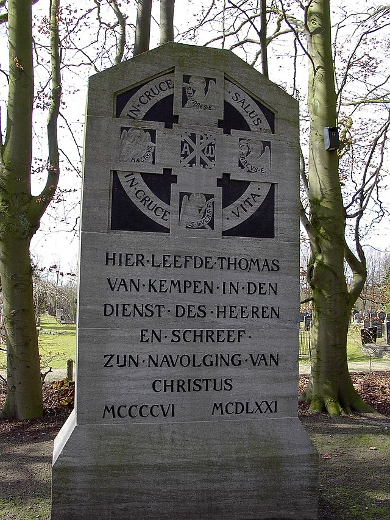
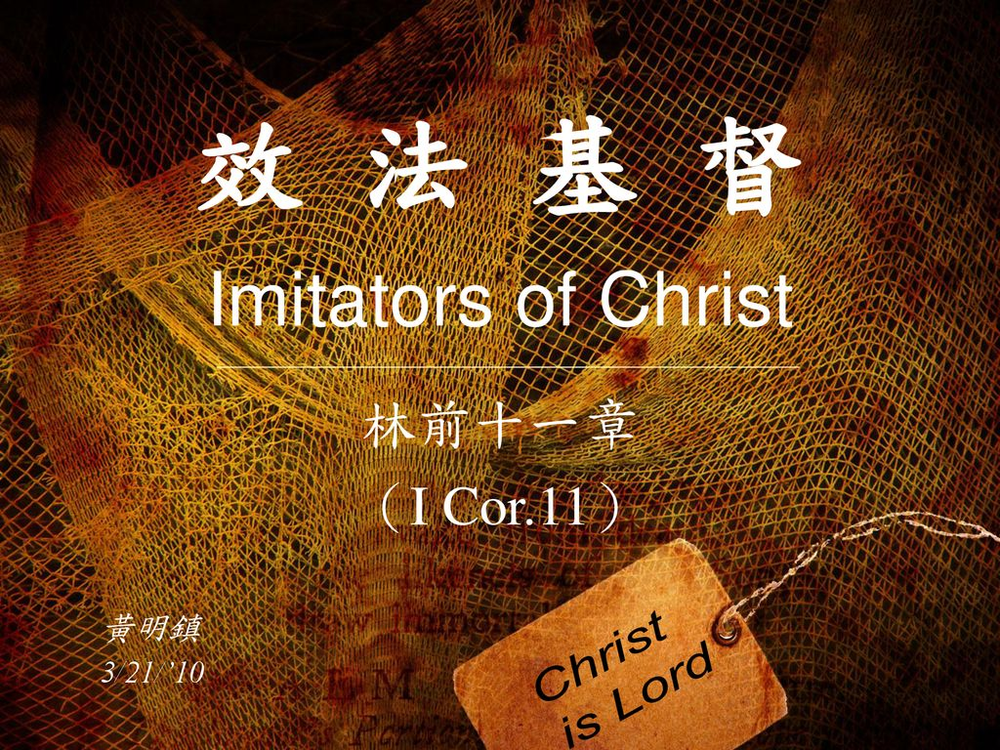

|
|
|
|
1 Light's abode, celestial Salem, |
第372首《光明處所歌》 |
|
https://www.zanmeishige.com/tab/14045.html?songbook=1&index=372
 Light's abode, celestial Salem
|
|
|
|
|


https://www.youtube.com/watch?v=6aVwUt1LEyM -
Hymn: Light's abode, Celestial Salem · David Thorne · Henry Smart ·
Portsmouth Cathedral Choir · The Regent Brass Ensemble ·
https://www.youtube.com/watch?v=Rh1lUwKSpoc
| Text: | Light's abode, celestial Salem |
| Author (attributed to): | Thomas à Kempis, c. 1379-1471 |
| Translator: | John Mason Neale, 1818-1866 |
| Tune: | REGENT SQUARE |
| Composer: | Henry Smart, 1813-1879 |
| Short Name: | Thomas á Kempis |
| Full Name: | Thomas á Kempis, 1380-1471 |
| Birth Year: | 1380 |
| Death Year: | 1471 |
Thomas of Kempen, commonly known as Thomas à Kempis,
was born at Kempen, about fifteen miles northwest of Düsseldorf, in 1379 or 1380. His family name was Hammerken. His father was a peasant, whilst his mother kept a dame's school for the younger children of Kempen. When about twelve years old he became an inmate of the poor-scholars' house which was connected with a "Brother-House" of the Brethren of the Common Life at Deventer, where he was known as Thomas from Kempen, and hence his well-known name. There he remained for six years, and then, in 1398, he was received into the Brotherhood. A year later he entered the new religious house at Mount St. Agnes, near Zwolle. After due preparation he took the vows in 1407, was priested in 1413, became Subprior in 1425, and died according to some authorities on July 26. and others on Aug. 8, 1471.
Much of his time was occupied in copying Missals, Breviaries, and other devotional and religious works. His original writings included a chronicle of the monastery of St. Agnes, several biographies, tracts and hymns, and, but not without some doubt as to his authorship the immortal Imitatio Christi, which has been translated into more languages than any other book, the Bible alone excepted. His collected works have been repeatedly published, the best editions being Nürnberg, 1494, Antwerp in 1607 (Thomae Malleoli à Kempis . . . Opera omnia), and Paris in 1649. An exhaustive work on St. Thomas is Thomas à Kempis and the Brothers of the Common Life, by S. W. Kettlewell, in 2 vols., Lond., 1882. In this work the following of his hymns are translated by the Rev. S. J. Stone:—
Notes
Jerusalem luminosa. [Eternal Life.] This hymn, in 100 lines, was first published by Mone, No. 304, from a 15th century manuscript at Karlsruhe, in which it is entitled, "On the glory of the heavenly Jerusalem as concerning the endowments of the glorified body." Of this and the two cognate hymns of this manuscript ("Quisquis valet" and "In domo Patris," q.v.) Dr. Neale says, “The language and general ideas prove the writer [unknown, but apparently of the 15th century] to have been subject to the influence of the school of Geert Groot and Thomas à Kempis "(Hymns chiefly Mediaeval on the Joys and Glories of Paradise, 1865, p. 44). Lines 25 ff., "In te nunquam nubilata," may be compared with a passage in St. Cyprian's De laude martyrii:—
"All things there have nothing to do with either cold or heat; nor do the fields rest, as in autumn; nor again does the fertile earth bring forth fruit in the early spring; all things belong to one season, they bear the fruits of one summer: indeed, neither does the moon serve to mark the months, nor does the sun run through the spaces of the hours; nor does the day, put to flight, give way to night; joyful rest reigns over the people, a placid dwelling contains them."
Dr. Neale's rendering of the lines 25-30 is:—
"There the everlasting spring-tide
Sheds its dewy, green repose;
There the Summer, in its glory,
Cloudless and eternal glows;
For that country never knoweth
Autumn's storms nor winter's snows." [Rev. W. A. Shoults, B.D.]
Translation in
common use:—
Light's abode, Celestial Salem. By J. M. Neale,
published in the Hymnal Noted, 1858, in 7
stanzas of 6 lines, and again in his Hymns chiefly
Mediaeval on the Joys and Glories of Paradise, 1865. In its
full or in an abridged form it has been included in several
hymn-books, including Hymns Ancient & Modern,
the Hymnary, &c. In the Hymnal
for the use of St. John, &c., Aberdeen, Appendix, 1870, it is
altered to "Seat of Light! Celestial Salem," and in the St.
Margaret's Hymnal (East Grinstead), 1875, as “0
how blessed, 0 how quickening."
--John Julian, Dictionary of Hymnology (1907)
| Short Name: | Henry Thomas Smart |
| Full Name: | Smart, Henry Thomas, 1813-1879 |
| Birth Year: | 1813 |
| Death Year: | 1879 |
Henry Smart (b. Marylebone, London, England, 1813; d. Hampstead, London, 1879),

a capable composer of church music who wrote some very fine hymn tunes (REGENT SQUARE, 354, is the best-known).
Smart gave up a career in the legal profession for one in music. Although largely self taught, he became proficient in organ playing and composition, and he was a music teacher and critic. Organist in a number of London churches, including St. Luke's, Old Street (1844-1864), and St. Pancras (1864-1869), Smart was famous for his extemporizations and for his accompaniment of congregational singing. He became completely blind at the age of fifty-two, but his remarkable memory enabled him to continue playing the organ. Fascinated by organs as a youth, Smart designed organs for important places such as St. Andrew Hall in Glasgow and the Town Hall in Leeds. He composed an opera, oratorios, part-songs, some instrumental music, and many hymn tunes, as well as a large number of works for organ and choir. He edited the Choralebook (1858), the English Presbyterian Psalms and Hymns for Divine Worship (1867), and the Scottish Presbyterian Hymnal (1875). Some of his hymn tunes were first published in Hymns Ancient and Modern (1861).
Bert Polman
Notes
Henry T. Smart (PHH 233) composed REGENT SQUARE for the Horatius Bonar (PHH 260) doxology "Glory be to God the Father." The tune was first published in the English Presbyterian Church's Psalms and Hymns for Divine Worship (1867), of which Smart was music editor. Because the text editor of that hymnal, James Hamilton, was minister of the Regent Square Church, the "Presbyterian cathedral" of London, the tune was given this title. At times Montgomery's text ["Angels, from the realms of glory"] is sung to GLORIA (347), but it is usually associated with this tune.
REGENT SQUARE is a splendid tune with lots of lift and some repeated phrases. For variety, try having small groups sing stanzas 1-3, with all on the refrains; stanza 4 sung by all in harmony; and stanza 5 sung in unison, perhaps with an alternative accompaniment.
--Psalter Hymnal Handbook, 1987
第372首 光明处所歌 Light’s abode，celestial Salem _Thomas A Kempis
经文：“城中有上帝的荣耀。城的光辉如同极贵的宝石，好像碧玉，明如水晶”(启21：11)。
这首《光明处所歌》是15世纪的一首拉丁名歌。作者多马因生于德国科伦附近的肯培(Kempis)村，所以称为多马.(托马斯)厄．肯培(Thomas A Kempis，1379一147l，意即肯培村的多马)。多马自幼在共同生活弟兄会的学校受教育，受到神秘主义的影垧，以后在圣阿格尼山麓的奥古斯丁修道院修道，三十三岁晋铎神父，终身为修道院院长。他敬虔修道，勤抄圣经。据说曾恭敬抄录了四部圣经，其中一部费了十五年时间。他也常应邀到各地讲道，堪称为当代的灵修导师。所有他的著作—函件、诗歌、讲道都具有深刻的灵修的含义，其中最著名的则是《效法基督》—一本帮助人追求心灵与上帝交通、使人谦卑俯伏归向上帝、爱慕基督的灵修手册。
这首《光明处所歌》的首句为“天上撒冷，光明处所”，表达了信徒对彼岸快乐、光明的渴望，它是冲破当代阴云黑暗的光辉。
“上帝为爱他的人所预备的，是眼睛未曾看见，耳朵未曾听见，人心也未曾想到的”(林前2：9)。
但信徒不是消极等待，而要“靠主能力”，才能自由健康，使自己变得更美、更刚强而又快乐、勇敢(第四节)。
第五节的勉励诗句“你当奋勇，心意欢然，将你责任好担当”对我们今天仍然有现实、积极的意义。
这首诗所用的曲调乃斯马特(事略参阅第261首)所谱。调名为《摄政王广场(REGENT SQUARE)》，用以纪念伦敦该处的长老会礼拜堂，在那里他为长老会编了一本通用的赞美诗。
奇異恩典 Amazing Grace
作者約翰牛頓（John Newton
1725-1807）生于英國倫敦。父親是西班牙人，從事航業；母親是英國人，是一位虔誠的基督徒，渴望兒子能受良好教育，並為牧師，她時常為此心願祈禱。約翰自幼隨母熟誦經文及聖詩。不幸在他七歲時，母親病逝，而她的禱告在三十年後才蒙應允。
母親去世後，約翰上了兩年學，因寄宿生活嚴謹而輟。十一歲時隨父親上船過著航海的生活，繼而被徵兵，逃役又被捕回。退伍後，在販賣奴隸船上工作，經常在非洲一帶販賣黑奴。他足跡遍四海，道德日益墮落，不久染上了水手們放蕩的生活習慣，吃喝嫖賭，奸詐欺騙，無所不為。日後因鬧事，反在非洲作奴隸之僕，過了幾年非人的生活，幸而他在英倫的父親聽到這消息後，就差人前往營救。1748年春，從非洲返英的途中，遇到強烈風暴，船險沉沒，他在怒濤中，向 神呼求：「 神啊！求祢救我安抵港口，我將永作祢的奴僕。」船長是一位虔誠的基督徒，使他對基督徒的生活產生愛慕之心。在漫長的航程中，他讀到肯培斯（Thomas
Kempis）的「遵主聖範」（The Imitation of Christ），心受感動，矢志悔改。
http://www.mbcsfv.org/chinese/library/hymncampanions/002.html
托馬斯·肯皮斯[編輯]
| 托馬斯·肯皮斯 | |
|---|---|
|

托馬斯·肯皮斯像
|
|
| 出生 | 1380年 神聖羅馬帝國科隆選侯國肯彭 |
| 逝世 |
1471年7月25日 神聖羅馬帝國烏得勒支主教區茲沃勒 |
| 職業 | 作家 |
| 國籍 | 德意志 |
{kind=link}
{kind=link}
托馬斯·肯皮斯 CRSA （Thomas à Kempis，1380年－1471年7月25日），或譯托馬斯·肯培、托馬斯·厄·肯培，文藝復興時期歐洲宗教作家。他積極提倡靈修，曾參加新靈修運動。他的一生主要從事於帶有宗教內容的創作，為《師主篇》一書的作者。[1]
他名字�堛滿uà」本意為「of」，因此其名的意思是肯彭的托馬斯，在德語中，他又稱為「Thomas von Kempen」。[2]
參考[編輯]
- ^ Sandra Sider.（2007）. Handbook to Life in Renaissance Europe.Oxford University Press,USA.ISBN 9780195330847.
- ^ Thomas à Kempis. Christian History | Learn the History of Christianity & the Church. [2018-10-22]. （原始內容存檔於2021-01-17） （英語）.
擴展閱讀[編輯]
- This article incorporates Public Domain material from the New Schaff-Herzog Encyclopedia of Religious Knowledge, Vol. VI: Innocents — Liudger, Schaff, Philip.
- Thomas à Kempis, The Imitation of Christ, Filiquarian, 2007, ISBN 1-59986-979-9
- Thomas à Kempis, The Imitation of Christ: A Spiritual Commentary and Reader's Guide, Ave Maria Press, 2005, ISBN 0-87061-234-4
- Thomas à Kempis, William C. Creasy , 編, The Imitation of Christ, Mercer University Press, 1989, ISBN 0-86554-339-9
- Thomas à Kempis, Harold C. Gardner, S.J. , 編, The Imitation of Christ, Doubleday, 1955, ISBN 978-0-375-70018-7
外部連結[編輯]
- 效法基督
- Read Imitation of Christ online
- Thomas à Kempis （頁面存檔備份，存於互聯網檔案館） at The Catholic Encyclopedia
- Quotes from Thomas à Kempis （頁面存檔備份，存於互聯網檔案館）
- Thomas à Kempis的作品 - 古騰堡計劃
- Imitation of Christ in PDF （頁面存檔備份，存於互聯網檔案館）
- Imitation of Christ in downloadable MP3 （頁面存檔備份，存於互聯網檔案館）
https://zh.wikipedia.org/zh-hk/%E6%89%98%E9%A9%AC%E6%96%AF%C2%B7%E8%82%AF%E7%9A%AE%E6%96%AF


內容介紹
為紀念文藝五十周年慶典，特別為現代讀者編選一系列的屬靈經典，並邀得眾學者作深入淺出的導讀及篩選，讓讀者能在消閒環境與氣氛中，重新認識歷代基督徒的心靈智慧結晶。
基督聖範如同朗朗星空，光芒處處，默想其中，自可捕捉無上智慧和憬悟。背負十架，捨己從主，默觀救主傷痕，只為主活，全然降服的屬靈操練，至今仍是天國子民的不二憲法。
《遵主聖範》是中世紀文學中，流傳最廣的經典名著，已譯成六十多種語文，影響深遠。本書仍是所有跟從主的現代門徒必修必讀的基本課程。
作者介紹
肯培斯(THOMAS A KEMPIS, 1380-1471)
出身貧農，一三八零年出生於德國肯盆 (Kempen)，因此被稱為肯培斯多馬。肯培斯在十三歲時，前往荷蘭笛凡得城受了七年教育。他熟讀聖經與聖本篤的作品。畢業後，再前往荷蘭北部日歐里(Zwolle)修道院就讀，他是共同生活兄弟會(The Brethren of Common Life)的一分子，一直擔任初入修會者的教師，逾半個世紀。他以非常嚴謹的生活態度處世，強調貧窮、謙卑、順服和善行，矢志委身於主，過聖潔的生活。他發現真正的信仰不是建立在行善，而是單單相信耶穌基督的救恩。